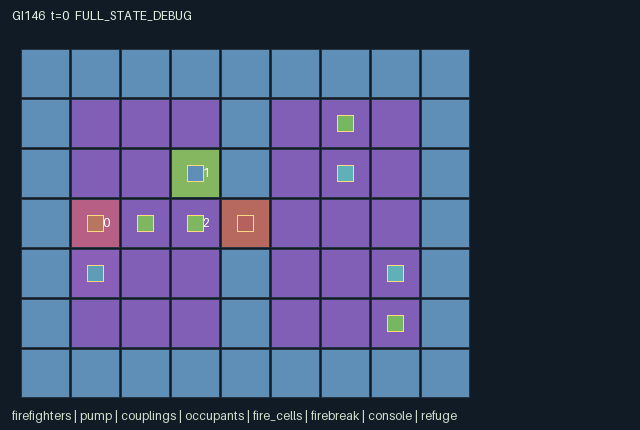

GI146 / SPATIAL
防火水泵与共同撤离
角色围绕有限水源、防火水泵与撤离路线配合，保护并运送人员到达避难点。
Original saved demonstration
Recorded native state, often authored scripts or interventions; information scope and failures are preserved in the original provenance. This is a saved demonstration, not live browser play.

Release verification episode
Untrained uniform legal actions. Actual JAX state sampled along the full original episode; full-state debug camera. No human performance or learning claim.

Run this game
crucibles play --game 146
Start Python locally, then open the address printed by the terminal. Installation, multiplayer, takeover and keyboard controls →
Objective, rewards & ending
Exact task contract
{
"objective": "Evacuate both occupants at the refuge before either suffers fatal heat exposure; share the finite water supply.",
"natural_termination": "Success when both occupants have status one; failure as soon as any occupant has status two. Otherwise the 80-transition horizon truncates. Natural completion takes priority at the horizon.",
"interaction": "Concurrent pump/receive and give/receive transfer real water. Ground couplings transmit pressure; picking one up can sever another firefighter's supply. A water-consuming console holder opens the gate for a different mover in that transition. Sprays alter later travel and occupant safety.",
"observation_access": "Public fixed terrain, pump reserve, conservation ledger, evacuation/casualty counts and preceding gate flag. Agents, occupants, couplings and fire/fuel are exposed only within Manhattan distance three. Coupling connection gauges are local. Geometry is distance-based without occlusion. All hidden dynamic payloads are minus one; visibility flags are explicit."
}Declared per-step reward bounds: -17 to 8. Observability: partially_observable.
Rules
- Three firefighters share 24 total water units: four initially carried and twenty in the pump. Tanks hold four.
- Ground hose couplings conduct only over Manhattan-one links to the pump. A carried coupling does not conduct.
- Pump and receive must occur together. Each receiver gets at most one pump unit per turn, and pump throughput is two.
- Giving transfers one water to an adjacent consenting receiver. Spraying and holding the console each consume one water.
- The console opens the firebreak only for the current joint transition. A displayed open flag describes the preceding transition.
- Moves into occupied old cells and contested destinations fail; swaps and follow-through are disallowed.
- Sprays clear radius-one fire. Every eighth transition fire spreads one edge using finite fuel.
- Carry one occupant at a time to the refuge. Any casualty ends the rescue; two evacuations succeed. Horizon is eighty.
Original mechanism document (historical status wording retained)
# Firebreak Pumps and Shared Evacuation
Status: AUTHORED_NOT_EXECUTED. This is an original initial-blind train-source proposal, not an R0 receipt, replay, solved instance, learning result or animation acceptance.
Three firefighters inhabit a public 9 by 7 grid. Boundary walls and a central wall leave a single firebreak at (4,3). The pump is at (1,3), its console is at (3,2), and the refuge is at (1,4). Two movable occupants start in the eastern room. All agents have identical action capabilities; the role labels describe their initial positions rather than hard restrictions. Source layout and capacities: candidate.py:L12-L61.
Each transition first sanitizes out-of-range or masked actions into wait. Movement is attempted simultaneously. A destination occupied by another firefighter in the old state blocks movement, even if that firefighter intends to leave; all contenders for a common destination fail. There are no swaps or follow-through moves. The mask certifies terrain and old fire intensity, not another actor's concurrent cooperation. Action four into the gate remains a legal attempt when the console is unheld; the transition determines whether it succeeds. A console holder within Manhattan one of (3,2) spends one water and enables that same transition's gate entry. The displayed gate flag records the preceding transition and is not a promise about the next joint action. Source: candidate.py:L105-L126, candidate.py:L144.
Two portable hose couplings have individual positions and holders. Action seven drops a carried coupling or requests the lowest-index nearby ground coupling. Each firefighter can hold at most one coupling; competing requests use cyclic priority (agent id minus old t, modulo three). Requests are computed from old ground ownership, so a drop cannot be picked up by a second actor in the same transition. Ground couplings conduct through Manhattan-one connections to the pump; carrying one breaks its conducting edge. The pressure graph is recomputed before water settlement. A local connection gauge is an actual observation and rendered attribute. Source: candidate.py:L72, candidate.py:L157, candidate.py:L88-L103.
Action five operates the pump while action six requests water. A receiver must be next to the pump or a currently connected ground coupling. The pump supplies at most two units per transition, at most one to each receiver, in cyclic priority order. Action twelve offers one water to an adjacent actor choosing receive; donors are processed in cyclic order, with a receiver chosen by the same order and capacity checked after preceding transfers. Pump operation itself never creates water. A giver cannot also receive in that transition. Simultaneous carrying, supply and gate support therefore create distinct duties. Source: candidate.py:L170.
Spray action eight spends one stored water and clears fire on the actor's cell and Manhattan-one neighbors. Holding the console also wets the gate. After transfers and occupant handling, every eighth transition advances deterministic fire by at most one spatial adjacency edge, raises existing intensity to at most two and spends finite cell fuel. A just-ignited cell cannot propagate again in the same transition. Fuel is present only in traversable eastern cells. Fire intensity two blocks attempted movement; a spray clears it for subsequent decisions. Fire can persist until the next spread pulse after its final fuel unit is spent. Source: candidate.py:L217.
Action ten picks the lowest-index nearby unresolved occupant or drops an already-carried occupant; each firefighter carries at most one occupant, independently of its coupling slot. Competing pickups use the same cyclic tie order. Carried occupants move with their carrier. Action eleven deposits a carried occupant only on the refuge tile. Evacuation happens before heat damage. Every unresolved occupant on a burning cell loses one of eight heat-tolerance units per transition, and a fatal exposure ends the episode. Source: candidate.py:L201, candidate.py:L217, candidate.py:L238.
The physical water identity is reserve + sum(tanks) + spent = 24: initially 20 reserve and four carried. Only spray/hold move water into the irreversible spent account; pump/peer transfers have equal debits and credits. Tanks stay in [0,4], reserve/spent in [0,24], health in [0,8], fuel in [0,4], intensity in [0,2], holder ids in {-1,0,1,2}. These are source-derived obligations for later numerical invariant checking, not executed proofs. The manifest binds the recomputed water_total field to constant 24 and declares nonnegative resource leaves. Entity capacities and holder selection prevent duplicated occupants or couplings by construction; independent rollout checks remain required.
Every active transition pays all three agents 4 times newly evacuated occupants minus 8 times new casualties minus 1. With two occupants the source-derived reward range is [-17,7], conservatively declared [-17,8]. All returned observations are integer-valued float32 in [-1,80]. Observation width is 8 public + 4 self + 63 map + 18 firefighter + 10 coupling + 12 occupant + 189 local fire/fuel = 304. Terrain, pump telemetry, rescue/casualty counts and gate history are public; dynamic entity payloads and fuel/fire are local within Manhattan three, with explicit visibility and minus-one hidden values. The geometry deliberately uses distance without line-of-sight occlusion. Source: candidate.py:L63-L81, candidate.py:L88-L103.
Natural success is both occupants evacuated; any casualty is natural failure. Otherwise t=80 truncates. Natural completion has priority if it coincides with the horizon. A terminal input is exactly absorbing: unchanged state and clock, unchanged terminal causes, zero reward and all dones true. No reset occurs inside the kernel. State leaves use signed int32/bool only; the incoming uint32 PRNG key is not copied into the state. This particular world is deterministic and ignores its accepted key. Source: candidate.py:L128-L133, candidate.py:L135-L138, candidate.py:L238.
Plausible untested strategies include a pump-and-console specialist supporting a fast rescuer, or relocating couplings and rotating water-rich firefighters through console duty. Spraying a route consumes supply that could instead sustain passage, while carrying a coupling can starve a partner before improving a later line. Direct rescue racing competes with protecting the second occupant. These are mechanism hypotheses; no strategic richness, solvability or learning outcome has been measured.
The literal playthrough attempts the first evacuation within twelve transitions. Its paired branches change one actor's action to isolate pumping, current console support and pressure loss from lifting a coupling. They were reasoned from the source and are explicitly UNEXECUTED_AUTHOR_HYPOTHESIS, with no fabricated trajectory states or success receipt. Later authorized variants might change pump placement, initial water distribution, the fire interval or the number of links; those would be separate source identities and require fresh scripts and validation.
Only public event channels appear in scene.json: rescue count, casualty count, spent water and preceding gate hold. Local water transfers, spray flags and pickup details remain available in full-state audit but are not global role-view overlays. Every visible location, active mask and attribute binds an implemented state leaf. The scene is declarative and does not provide a renderer, adapter, replay or animation receipt.
Community reference attribution (supplied frozen files only; no external lookup or execution):
- [JaxMARL_README.md](https://github.com/bold-lab-ai/JaxMARL/blob/main/README.md); supplied SHA-256 \`6649d04f5ed05d620e78e8416a00d4db841cf2633ae60fdb3c9729e037a71c15\`. Parallel multi-agent API and separate agent-keyed integration convention; no environment source, layout or rules copied.
- [Pgx_README.md](https://github.com/sotetsuk/pgx/blob/main/README.md); supplied SHA-256 \`153f44999e55d5df3e51e13dee6ef418cc9704ddfa26206f1dc5789b9cbbf8df\`. Explicit legal masks, terminal separation and caller-supplied randomness as API concepts; no board implementation copied.
- [PureJaxRL_README.md](https://github.com/luchris429/purejaxrl/blob/main/README.md); supplied SHA-256 \`d5f40182c924a42cec820931e61a7d5070e48c4c8413c7d16455abc6ea0ef6b0\`. Algorithm implementation and end-to-end JAX training context only; it is not an environment catalogue and no learner code is adopted.
- [Craftax_Baselines_ppo_rnn.py](https://github.com/MichaelTMatthews/Craftax_Baselines/blob/main/ppo_rnn.py); supplied SHA-256 \`5f93e6a7c3a1e0c551831d75be311735ba495dfdecae51787a1c03a27b1cd011\`. Recurrent PPO/reset-boundary integration reference only. Its source explicitly attributes adaptation to Chris Lu and PureJaxRL; none of that code is copied or executed here.
- [Craftax_README.md](https://github.com/MichaelTMatthews/Craftax/blob/main/README.md); supplied SHA-256 \`7f9757a2047143cf183f7e2e84851a740f386af80dbee050c89b316d66a3d3ff\`. Persistent spatial objects/resources and source-bound rendering as design concepts; no Craftax mechanics implementation, layout, texture or score is reused.
No upstream code is copied. These are original substantive rules under the assigned contract. The source kernel uses the flat array boundary; a JaxMARL agent-keyed public adapter, native replay and animation remain separate implementation responsibilities. The frozen scientific learner is not modified by this package. New A/O/U shapes require matching downstream metadata and policy banks, and authored interaction does not establish meta-learning or transfer.
Input authority: batch_authorization.json SHA-256 \`ac3dcccc5abcd2f8b4239552c1f42f80cd88625264c7eca27e02392f3dc14a00\`; all 20 listed physical inputs matched their declared bytes and hashes. Only this sanitized batch, its contracts and the supplied official reference snapshots were read. No prior candidates, outcomes, heldout tests, trained policies, feedback, remote tool, numerical library or source import was used.
Source SHA-256: \`0bf7d018ace424e77dc0c3f7571e7889fde9463a76b053e9c167e2e6a836be16\`. Signed integer design values are represented as int32, boolean values as bool; only returned observations and rewards are float32. PRNG keys remain caller-owned. No source versions beyond initial attempt_00 were generated.
Commands
Roles & abilities
agent_0 firefighter_0_initial_pump_position
agent_1 firefighter_1_initial_console_position
agent_2 firefighter_2_initial_rescue_position
Observation permissions
Training receives only the original observation rows. Role cameras use declared visibility; debug cameras are explicitly marked. Local benchmark records log debug exposure and role takeover history.
Exact observation layout
[
{
"slice": [
0,
8
],
"meaning": "Public t, pump reserve, spent water, total water ledger, evacuated count, casualty count, preceding gate-open flag, joint done",
"visibility": "public"
},
{
"slice": [
8,
12
],
"meaning": "Self id, x, y, stored water",
"visibility": "self"
},
{
"slice": [
12,
75
],
"meaning": "Public 7 by 9 terrain map, row-major yx; dynamic fire is excluded",
"visibility": "public"
},
{
"slice": [
75,
93
],
"meaning": "Three local firefighter records: visible, x, y, water, carries coupling, carries occupant; hidden payload minus one",
"visibility": "local"
},
{
"slice": [
93,
103
],
"meaning": "Two local coupling records: visible, x, y, holder id, connected gauge; hidden payload minus one",
"visibility": "local"
},
{
"slice": [
103,
115
],
"meaning": "Two local occupant records: visible, x, y, holder id, status, health; hidden payload minus one",
"visibility": "local"
},
{
"slice": [
115,
304
],
"meaning": "63 row-major local cell records: visible, fire level, fuel; coordinates are implied by public map; hidden payload minus one",
"visibility": "local"
}
]Entity visibility & attributes
[
{
"id": "firefighters",
"kind": "agent",
"count": 3,
"position": [
"agent_pos"
],
"active": [
"agent_active"
],
"visibility": [
"agent_vis"
],
"attributes": [
{
"state_path": [
"water"
],
"meaning": "Stored water units, capacity four",
"display": "bar"
},
{
"state_path": [
"has_hose"
],
"meaning": "Carries one portable coupling",
"display": "flag"
},
{
"state_path": [
"has_person"
],
"meaning": "Carries one living occupant",
"display": "flag"
}
]
},
{
"id": "pump",
"kind": "resource",
"count": 1,
"position": [
"pump_pos"
],
"active": [
"pump_active"
],
"visibility": [
"pump_vis"
],
"attributes": [
{
"state_path": [
"pump_water"
],
"meaning": "Finite communal water reserve",
"display": "number"
}
]
},
{
"id": "couplings",
"kind": "object",
"count": 2,
"position": [
"hose_pos"
],
"active": [
"hose_active"
],
"visibility": [
"hose_vis"
],
"attributes": [
{
"state_path": [
"hose_holder"
],
"meaning": "Carrier id or minus one for a ground coupling",
"display": "category"
},
{
"state_path": [
"hose_connected"
],
"meaning": "Ground coupling physically connected to pump",
"display": "flag"
}
]
},
{
"id": "occupants",
"kind": "object",
"count": 2,
"position": [
"person_pos"
],
"active": [
"person_active"
],
"visibility": [
"person_vis"
],
"attributes": [
{
"state_path": [
"person_holder"
],
"meaning": "Carrier id or minus one",
"display": "category"
},
{
"state_path": [
"person_status"
],
"meaning": "Zero unresolved, one evacuated, two lost",
"display": "category"
},
{
"state_path": [
"person_health"
],
"meaning": "Remaining heat tolerance",
"display": "bar"
}
]
},
{
"id": "fire_cells",
"kind": "hazard",
"count": 63,
"position": [
"cell_pos"
],
"active": [
"fire_active"
],
"visibility": [
"cell_vis"
],
"attributes": [
{
"state_path": [
"fire_level"
],
"meaning": "Zero out, one burning, two movement-blocking fire",
"display": "bar"
},
{
"state_path": [
"fuel"
],
"meaning": "Remaining finite burn fuel",
"display": "number"
}
]
},
{
"id": "firebreak",
"kind": "gate",
"count": 1,
"position": [
"gate_pos"
],
"active": [
"gate_active"
],
"visibility": [
"gate_vis"
],
"attributes": [
{
"state_path": [
"gate_open"
],
"meaning": "A console was held during the preceding transition",
"display": "flag"
}
]
},
{
"id": "console",
"kind": "landmark",
"count": 1,
"position": [
"console_pos"
],
"active": [
"console_active"
],
"visibility": [
"console_vis"
],
"attributes": []
},
{
"id": "refuge",
"kind": "landmark",
"count": 1,
"position": [
"refuge_pos"
],
"active": [
"refuge_active"
],
"visibility": [
"refuge_vis"
],
"attributes": []
}
]Actual verification & provenance
Per-game execution receipt
{
"game": "gi146",
"status": "PASS",
"verification_revision": 2,
"source_sha256": "0bf7d018ace424e77dc0c3f7571e7889fde9463a76b053e9c167e2e6a836be16",
"seed": 20261101,
"runtime": {
"jax": "0.4.38",
"numpy": "1.26.4",
"devices": [
"TFRT_CPU_0"
]
},
"dimensions": {
"num_agents": 3,
"observation_size": 304,
"num_actions": 13,
"max_steps": 80
},
"checks": {
"eager_reset": {
"status": "PASS",
"seconds": 2.7617392539978027
},
"observation_spaces_legal_masks": {
"status": "PASS",
"seconds": 0.9120275974273682
},
"eager_step": {
"status": "PASS",
"seconds": 1.583364725112915
},
"jit_reset": {
"status": "PASS",
"seconds": 0.21214079856872559
},
"jit_step": {
"status": "PASS",
"seconds": 1.0701074600219727
},
"eager_jit_integer_parity_float_measurement": {
"status": "PASS",
"seconds": 0.0015721321105957031
},
"jit_vmap_reset": {
"status": "PASS",
"seconds": 0.20967626571655273
},
"jit_vmap_step": {
"status": "PASS",
"seconds": 2.37711501121521
},
"outer_autoreset_api": {
"status": "PASS",
"seconds": 1.8354451656341553
},
"full_original_horizon_episode_and_render": {
"status": "PASS",
"seconds": 0.5228650569915771
}
},
"human_scores": null,
"browser_controls": "PENDING",
"failures": [],
"elapsed_seconds": 11.970787763595581,
"float_parity_max_abs": 0.0,
"numerical_parity": "EXACT",
"raw_terminal_absorbing": "PASS",
"terminal_outer_reset": "PASS",
"episode_steps": 15,
"scripted_random_returns": [
-31.0,
-31.0,
-31.0
],
"terminal": true,
"demo_information": "FULL_STATE_DEBUG",
"demo_frames": 6,
"render_roles_checked": 3
}Chromium control verification
{
"game": "gi146",
"status": "PASS",
"human_scores": null,
"engineering": true,
"checks": [
"catalog_selected_and_real_native_reset",
"dom_queue_and_native_step",
"second_participant_ownership_and_native_joint_step",
"all_roles_individually_controllable_no_role_cap",
"explicit_debug_camera",
"release_to_pure_ai_without_reset"
],
"ui_sha256": "15b5861d23b3c42811865c954d5a988280bbfd21cf8e93754be2437a027158c5",
"seconds": 4.816822290420532
}Original identity and file hashes
{
"id": 146,
"key": "gi146",
"title": "防火水泵与共同撤离",
"summary": "角色围绕有限水源、防火水泵与撤离路线配合，保护并运送人员到达避难点。",
"tags": [
"火场协作",
"救援"
],
"family": "spatial",
"dimensions": {
"num_agents": 3,
"observation_size": 304,
"num_actions": 13,
"max_steps": 80
},
"source_sha256": "0bf7d018ace424e77dc0c3f7571e7889fde9463a76b053e9c167e2e6a836be16",
"manifest_sha256": "9c2999c2d45af63f6fe6bb08913e6c50314c10d846ea8795c5034a3a44052c47",
"files": [
{
"file": "candidate.py",
"sha256": "0bf7d018ace424e77dc0c3f7571e7889fde9463a76b053e9c167e2e6a836be16",
"bytes": 15697,
"origin": "work/exp_2/game_incubator_v3/community_games222_225_visualization_root222_v1/native154_candidate/registry/v2/games/game-v3-00146/candidate.py"
},
{
"file": "manifest.json",
"sha256": "9c2999c2d45af63f6fe6bb08913e6c50314c10d846ea8795c5034a3a44052c47",
"bytes": 16847,
"origin": "work/exp_2/game_incubator_v3/community_games222_225_visualization_root222_v1/native154_candidate/registry/v2/games/game-v3-00146/manifest.json"
},
{
"file": "scene.json",
"sha256": "4fddd2d6ce00a2545f36a30df061a408ed7a03e3bb13749f0aacaf37c72b5ead",
"bytes": 8069,
"origin": "work/exp_2/game_incubator_v3/community_games222_225_visualization_root222_v1/native154_candidate/registry/v2/games/game-v3-00146/scene.json"
},
{
"file": "mechanism.md",
"sha256": "7e99d06dabefd8db56d5f29eee5c242831bc8f35c31a84c883b50e82897f2d04",
"bytes": 10430,
"origin": "work/exp_2/game_incubator_v3/sources/game-v3-00146/attempt_00/mechanism.md"
},
{
"file": "playthrough.json",
"sha256": "86fbd8ce61e0618da24b9c3676ebf7084ee5d0684190cfbdd38dc6a406a201e5",
"bytes": 3321,
"origin": "work/exp_2/game_incubator_v3/sources/game-v3-00146/attempt_00/playthrough.json"
}
],
"original_status": "NATIVE154_REFERENCE",
"original_saved_replay": true,
"release_validation": "PASS",
"human_scores": null,
"browser_validation": "PASS"
}